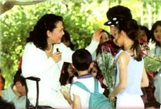
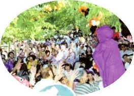
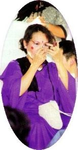

| Reportages spéciaux |
Récemment, un séisme de forte densité a frappé les environs de Los Angeles, en Californie, renforçant des rumeurs qu'un plus grand tremblement de terre devait encore se produire. Les accidents de la circulation survenaient fréquemment et toute la journée, on pouvait entendre les sirènes des voiture de police, de pompiers et des ambulances. Les semaines suivantes, comme Halloween approchait, un sentiment perturbant concernant l'arrivée du nouveau millénaire occupait l'esprit de beaucoup de gens.
Sentant ce malaise, notre Maître omniprésent octroyait soudainement Los Angeles de Sa présence. Cette agréable surprise attirait, non seulement des disciples de Los Angeles et des environs, mais apportait encore des bénédictions suprêmes à l'État de Californie.
Maître a fait son apparition à notre centre de Los Angeles aux alentours de midi après la séance de méditation de groupe du samedi 30 Octobre. Elle avait l'air jeune et élégante vêtue d'un chemisier et d'un pantalon blancs. Sa tenue était rehaussée par un collier de perle et une paire de boucles d'oreille avec des perles. Sa chevelure bouclée, à la hauteur des épaules Lui donnait un air absolument magnifique et élégant.
 Maître saluait tout le monde gaiement, et alors facétieusement étirait Ses bras vers les branches d'arbre derrière Son siège pour se détendre, alors que tout le monde éclatait d'un rire charmant. Un futur initié d'Au Lac demandait une étreinte, que Maître a gentiment accordée, et puis Elle a écouté une soeur qui chuchotait dans Son oreille pendant un moment. L'enfant et la mère d'un initié offraient des fleurs à Maître et demandaient l'initiation, Maître donnait Son accord aussitôt. Aux deux jeunes initiés pratiquants qui avaient des problèmes dans la vie et dans la pratique spirituelle, Maître a répondu patiemment à leur longue série de questions tournant leurs pleurs en rires.
Dans un discours spécial adressé aux jeunes initiés, Maître a dit qu'Elle les admirait comme des yogis parce que dans un monde aussi turbulent, ils parviennent encore à être végétariens et à méditer. Elle a ajouté qu'avec juste un peu plus de pratique, ils seront parfaits. Maître les a encouragés à se discipliner dans la méditation et à le faire tout comme on respire. Il y a seulement deux choses dans la vie : les choses correctes et incorrectes. Maître a dit qu'ils devraient énumérer ce qu'ils doivent faire chaque jour, prendre le contrôle de leurs vies, et décharger leurs responsabilités.
Quand une soeur future initiée a demandé à Maître comment gérer le stress dans sa profession d'enseignante, Maître lui a répondu qu'il n'y avait aucun gain sans douleur. Maître lui a conseillée de faire ce qu'elle devait faire et de le faire par plaisir. Si elle perd, elle perd. Soyez un bon perdant et oubliez le travail. Ne le faites pas pour la position. Si vous le faites, vous vous dévaluerez, faites-le plutôt pour la connaissance des étudiants. Si elle donne le meilleur d'elle-même, elle s'accomplira dans le travail.
Après avoir satisfait nos besoins intellectuels en répondant affectueusement et avec humour à nos questions, Maître a accordé Sa permission pour une initiation cet après-midi là. Plus tard, Elle a bavardé fortuitement avec quelques invités et disciples en dehors de la salle de méditation. Pendant l'initiation, Maître a enseigné patiemment aux nouveaux pratiquants comment réciter les Noms Sacrés. Puis Elle est allée dehors et a distribué des bonbons à chaque personne. Maître a donné personnellement de Ses propres mains des bonbons bénis à chaque disciple, un par un, bénissant chacun individuellement. Elle faisait en sorte que chacun se sente comme s'il était le plus aimé de tout l'univers. Plus tard cette nuit là, Maître a répondu aux questions posées par des disciples et puis est allée de nouveau dans la salle où l'on dînait pour bénir encore tout le monde. Avant de partir, Maître nous a encouragé à méditer davantage, surtout jusqu'à l'arrivée de l'an 2000.
 Dimanche, c'était Halloween et tout le monde s'est déguisé dans des costumes créatifs de couleurs vives comme ceux des extra-terrestres, fantômes, personnages du film «La guerre des étoiles», mariées, et anges. Certains portaient des habits traditionnels tandis que d'autres avaient des costumes couvrant tout leur corps avec des masques sur leurs visages. Alors que les gens appréciaient la nourriture et les festivités, les applaudissements signalant l'arrivée de Maître se sont faits entendre. Nous sommes restés surpris à l'idée de savoir que la personne qui portait une robe violette longue et un masque noir et qui marchait parmi la foule comme si c'était quelqu'un d'autre, s'est révélée être Maître ! Elle a salué chaleureusement tout le monde, et avec délice, nous avons tous ri gaiement, tandis que certains parmi nous percevaient un message plus subtil : " Maître est venue déguisée et seulement quelques-uns L'ont reconnue. De la même manière, beaucoup de gens dans le monde attendent le Sauveur, mais Elle est déjà ici. Il y a que très peu de gens qui peuvent La reconnaître dans ce nouveau costume terrestre. "
Dans une humeur joviale, Maître a commencé à lancer des bonbons vers des bras tendus de la foule. Nous hurlions et L'encouragions chaque fois qu'Elle jetait certains cadeaux précieux, et nous étions contents dans cette atmosphère vivante. Maître, prise peut-être par la spontanéité du moment, hurlait et criait avec nous, et nous tous sommes redevenus des enfants dans ce moment d'insouciance lorsque le temps s'arrête et le paradis règne sur Terre.
 Puis, Maître s'est maquillée en clown sous l'admiration des spectateurs. Oui, notre Maître s'est déguisée Elle-même en clown, s'amusant d'Elle-même et distrayant tout le monde dans le but de les libérer.
Le programme a duré assez longtemps, de l'après-midi jusqu'à la soirée, et il y a eu une pause pour le dîner. Maître a fait preuve de Sa compassion et Sa grâce habituelles face au manque de préparation des artistes.
Après ce jour chargé, Maître était fatiguée. Elle a dit en plaisantant que de nouveaux "fantômes" de l'enfer l'épuisaient. Dieu sait combien d'âmes Elle venait juste de sauver. La nuit s'est terminée avec Maître qui a distribué encore des fruits et des bonbons, remplis de Son amour infini, aux initiés et invités, nous laissant en partant dans la félicité. Nous étions déterminés à méditer plus pour L'aider à sauver le monde.
Pour ceux qui n'avaient jamais pu fêter Halloween, cette dernière célébration du jour férié du vingtième siècle devenait un des meilleurs moments de leur vie, tout cela grâce à l'amour de Maître et de Ses bénédictions.